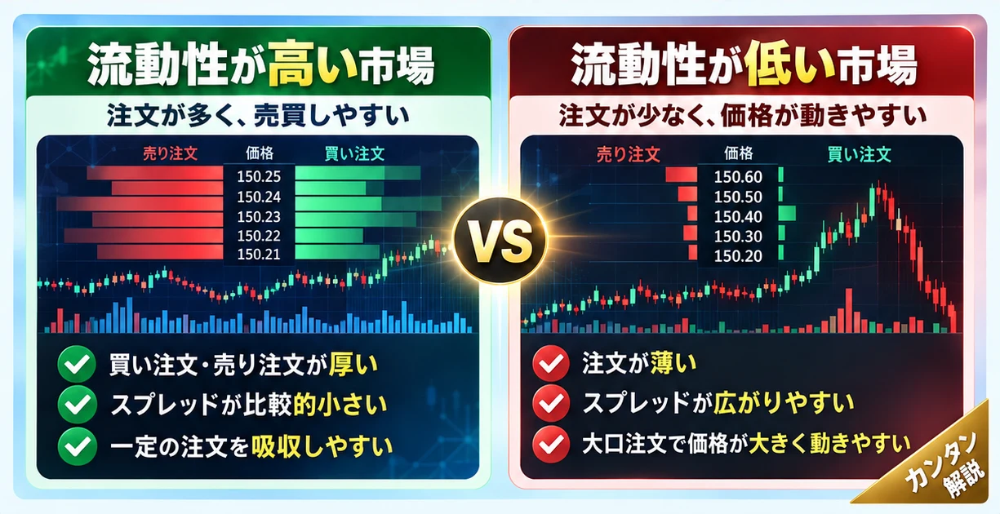

話題・トレンド｜金融市場の基礎知識
市場の流動性とは？なぜ取引が少ないと株価や為替が急変するの？初心者向けに解説
「薄商いで株価が急騰」「流動性低下で円相場が急変」。なぜ取引相手が少ないと価格が大きく動くのでしょうか。注文板の仕組みから、株式・FX・暗号資産・国債市場、金融政策との関係まで解説します。

1. 市場の流動性とは？
市場の流動性（Market Liquidity）は、 資産を大きな価格変動や過大な取引コストを伴わずに売買しやすい程度 を表します。たとえば「今すぐ売りたいときに買ってくれる人がいるか」「買いたい数量を大幅な値上がりなしに購入できるか」がポイントです。
流動性が高い市場でも、企業業績や金融政策などが変われば価格は動きます。流動性は値下がりしない保証ではありません。
2. 流動性が高い市場と低い市場の違い
| 比較項目 | 流動性が高い傾向 | 流動性が低い傾向 |
|---|---|---|
| 売買相手 | 比較的見つけやすい | 見つけにくい場合がある |
| 注文の厚み | 近い価格に注文が多い | 近い価格の注文が少ない |
| 売値と買値の差 | 狭い傾向 | 広い傾向 |
| 大口注文の影響 | 吸収されやすい | 価格が動きやすい |
| 希望価格での約定 | 比較的成立しやすい | 成立しにくい場合がある |
これは一般的な傾向です。市場の流動性は時間、銘柄、注文サイズ、急変時の状況によって変わり、一つの数値では決まりません。
3. なぜ流動性が低いと価格が急変しやすいの？
重要なのは 売りたい数量に対して、反対側の買い注文がどれだけあるか です。売り注文が多くても、それを吸収する買い注文が十分あれば価格への影響は比較的小さくなります。
反対に買い注文が集中し、近い価格の売り注文が薄いと、より高い価格まで買い上がって急騰することがあります。注文数量だけでなく 反対注文の厚み が価格変動を左右します。
4. 板（オーダーブック）とは？
板（オーダーブック）は、価格ごとに並ぶ買い注文と売り注文の数量を示します。以下は 説明のための架空の買い板 です。手数料・非表示注文・注文取消などは考慮していません。
| 買い希望価格 | その価格の買い数量 | 累積買い数量 |
|---|---|---|
| 1,000円 | 100株 | 100株 |
| 999円 | 200株 | 300株 |
| 998円 | 300株 | 600株 |
| 997円 | 400株 | 1,000株 |
最良買い気配が1,000円のとき、100株の成行売りなら1,000円で約定する想定です。一方、500株の成行売りは、100株が1,000円、200株が999円、200株が998円で約定し、平均約定単価は 998.8円 となります（架空の例）。
表示板は市場全体の注文を完全には表しません。非表示注文、取引所外の取引、注文取消、約定直前の板変化にも注意が必要です。
5. 出来高・売買代金と流動性は同じ？
出来高 は一定期間に成立した株数や取引数量、 売買代金 は成立した取引金額です。どちらも活発さを測る参考になりますが、「今この数量を有利な価格で売買できるか」を直接保証しません。
急変時には出来高が増えても、注文を出す参加者が減り、スプレッドが広がることがあります。約定済みの取引量と、これから取引できる注文の厚みは区別しましょう。
6. スプレッドとは？
スプレッドは、一般に最良の売り気配（買う側が支払う価格）と最良の買い気配（売る側が受け取る価格）の差です。たとえば買値99.9円・売値100.1円なら差は0.2円です（架空例）。
流動性が低下すると、この差が広がり取引コストが増える場合があります。株式は取引所の気配、FXは業者が提示するBid/Ask、暗号資産は取引所・販売所や通貨ペアごとの提示条件など、仕組みに違いがあります。
7. スリッページと価格への影響
スリッページ は注文時に想定した価格と実際の約定価格との差です。市場急変や板の薄さによって不利にも有利にも生じます。 マーケットインパクト は自分の注文が市場価格そのものに与える影響です。
| 注文方法 | 特徴 | 注意点 |
|---|---|---|
| 成行注文 | 価格を指定せず、約定を優先 | 板が薄いと想定外の価格で成立する場合がある |
| 指値注文 | 希望価格またはそれより有利な条件を指定 | 希望価格に達しなければ約定しない場合がある |
成行でも市場の仕組みや制限により必ず全量が即時約定するとは限りません。
8. なぜ祝日・早朝・深夜に急変することがあるの？
参加者が少ない祝日や時間帯は注文が薄くなり、比較的小さな売買でも価格が動きやすくなる場合があります。ただし すべての祝日・早朝・深夜が薄商いとは限りません 。
株式は取引所ごとに定められた取引時間・休場日があります。FXは一般に平日を中心に世界各地で取引され、暗号資産は多くの取引所で週末も取引できます。ただし取引可能時間と十分な流動性がある時間は別です。
9. 株式市場の流動性
大型株や売買代金の多い銘柄は、一般に参加者が多く板が厚い傾向があります。一方、小型株や取引の少ない銘柄では、一つの注文で価格が動く場合があります。ただし時価総額だけで判断できず、浮動株、株主構成、売買制度、決算発表なども影響します。
10. FX市場の流動性
FXでは主要通貨ペアは一般に取引参加者が多く、取引量の少ない通貨ペアはスプレッドが広がりやすい傾向があります。ただし重要指標発表時には主要通貨でも流動性が変化します。
外国為替市場は分散型で、銀行・電子取引プラットフォーム・FX会社などを通じて取引されます。株式取引所のように市場全体を一枚の板で把握できるとは限りません。
11. 暗号資産市場の流動性
暗号資産は同じ銘柄でも取引所や通貨ペアによって板の厚みやスプレッドが異なります。特定取引所の大口売りが、その市場の価格に強い影響を与える場合もあります。
24時間取引できることと、24時間十分な流動性があることは別 です。週末、システム障害、急激な資金移動にも注意が必要です。
12. 国債市場の流動性
国債市場でも買い手・売り手の厚みや売買気配の差は重要です。市場流動性が低下すると、国債の売買コストが増え、同じ注文でも価格や利回りが大きく動く場合があります。
国債価格と利回りは一般に逆方向に動きます。基礎知識は 投資コラム一覧 の「国債」「国債入札」「長期金利」の各解説も参照してください。
13. 市場の流動性と金融政策・QT
| 用語 | 意味 |
|---|---|
| 市場の流動性 | 資産を円滑に売買できる程度 |
| 資金調達の流動性 | 必要な資金を期限どおりに調達できる程度 |
| 中央銀行準備などの流動性 | 銀行間決済や金融システムの資金供給を支える準備・決済基盤 |
QT（量的引き締め）は中央銀行が保有資産を縮小するなどの政策です。金融環境や資金調達条件に影響する可能性はありますが、 QT＝すべての市場で必ず売買の流動性が低下する わけではありません。金融政策、ディーラーの仲介能力、規制、投資家の需給なども重要です。
14. キャリートレードの巻き戻しと流動性
キャリートレードとは？ で説明したように、借入を利用した投資ポジションが同時に解消されると、注文が一方向に集中する場合があります。
反対注文が減ると価格変動が増幅されることがあります。ただし、すべての急落がキャリートレードの巻き戻しによるものではありません。
15. 流動性とボラティリティは何が違う？
| 概念 | 何を表す？ | 代表的な見方 |
|---|---|---|
| 流動性 | 売買のしやすさ | スプレッド、板の厚み、価格インパクト |
| ボラティリティ | 価格変動の大きさ | 一定期間の価格変化のばらつき |
流動性が低いと値動きが増幅される場合がありますが、両者は同義ではありません。流動性が比較的高い市場でも大きなニュースで価格が急変することがあります。
16. 流動性を確認するには？
取引前に、次の項目を組み合わせて確認しましょう。
- 出来高・売買代金は十分か
- 売値と買値のスプレッドは広がっていないか
- 板の厚みは自分の注文数量に見合うか
- 想定約定価格と注文数量に無理はないか
- 取引時間帯・休場日はどうか
- 重要な金融イベントや急変が起きていないか
- 過去の約定状況や価格の飛びはどうか
- 商品・取引所・通貨ペアごとの特徴は何か
一つの数字だけで判断せず、複数の観点から見ましょう。
17. 流動性に関する金融ニュースの読み方
金融ニュースでは「取引量が少ない」のか「近い価格の反対注文が少ない」のかを区別すると読み解きやすくなります。
| ニュースの表現 | 読み解くポイント |
|---|---|
| 薄商いで株価上昇 | 買い注文に対して売り注文が少なく、価格が上がりやすかった可能性 |
| 流動性低下で円相場急変 | 特定時間帯や取引経路で反対注文が薄かった可能性 |
| 国債市場の流動性悪化 | 売買気配の差や大口取引の価格インパクトに注目 |
| 暗号資産市場で大口売り | 取引所ごとの板の厚みと約定価格に注目 |
これらは読み方の架空例であり、実際のニュースの原因を断定するものではありません。
18. FAQ
市場の流動性とは何ですか？
大きな価格変動や過大なコストを伴わず、資産を売買しやすい程度のことです。
流動性が高いと安全なのですか？
いいえ。流動性が高くても、ニュースや需給の変化で価格は大きく動くことがあります。
出来高が多ければ流動性も高いのですか？
必ずしもそうではありません。板の厚み、スプレッド、取引数量による価格への影響も確認します。
なぜ流動性が低いと急落するのですか？
売り注文を吸収する買い注文が少ないと、より低い価格まで売買が成立する場合があるためです。
スプレッドと流動性はどう関係しますか？
一般に売買相手が見つかりにくいと、売値と買値の差が広がる場合があります。
流動性とボラティリティは同じですか？
異なります。流動性は売買のしやすさ、ボラティリティは価格変動の大きさです。
FXと株式市場の流動性は何が違いますか？
株式は取引所の板を確認できる場合がありますが、FXは分散型で市場全体を一つの板で把握できません。
QTをすると市場の流動性は必ず低下しますか？
いいえ。QTは中央銀行の保有資産縮小などの政策であり、個別市場の売買のしやすさとは別の概念です。
19. まとめ
市場の流動性は資産の売買のしやすさを示します。反対注文が薄いと大口注文で価格が急変しやすく、出来高だけでは判断できません。スプレッド、スリッページ、板の厚みも重要です。
株式・FX・暗号資産・国債では市場構造が異なり、急変時には流動性の低下が値動きを増幅する場合があります。市場の流動性と資金調達の流動性を混同せず、複数の情報を組み合わせて考えましょう。
関連記事・学習ガイド
キャリートレードとは？金利差と円相場の関係 ／ 投資コラム・解説記事一覧 。国債、長期金利、金融引き締め、リスクとリターン、FX、暗号資産などの個別解説は一覧から探せます。未確認の個別記事URLは推測していません。
免責事項： 本記事は一般的な金融教育情報であり、特定の金融商品・取引を推奨するものではありません。市場制度や流動性は変化します。投資判断に際しては公式情報や取引条件をご確認ください。